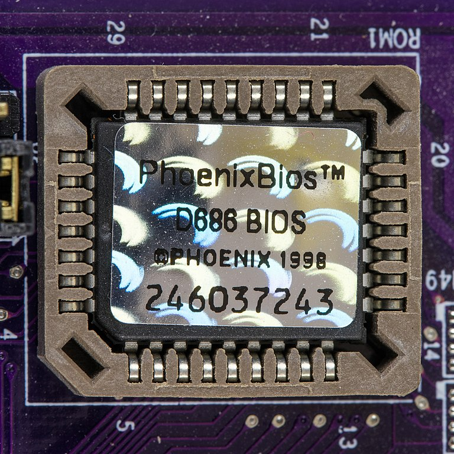
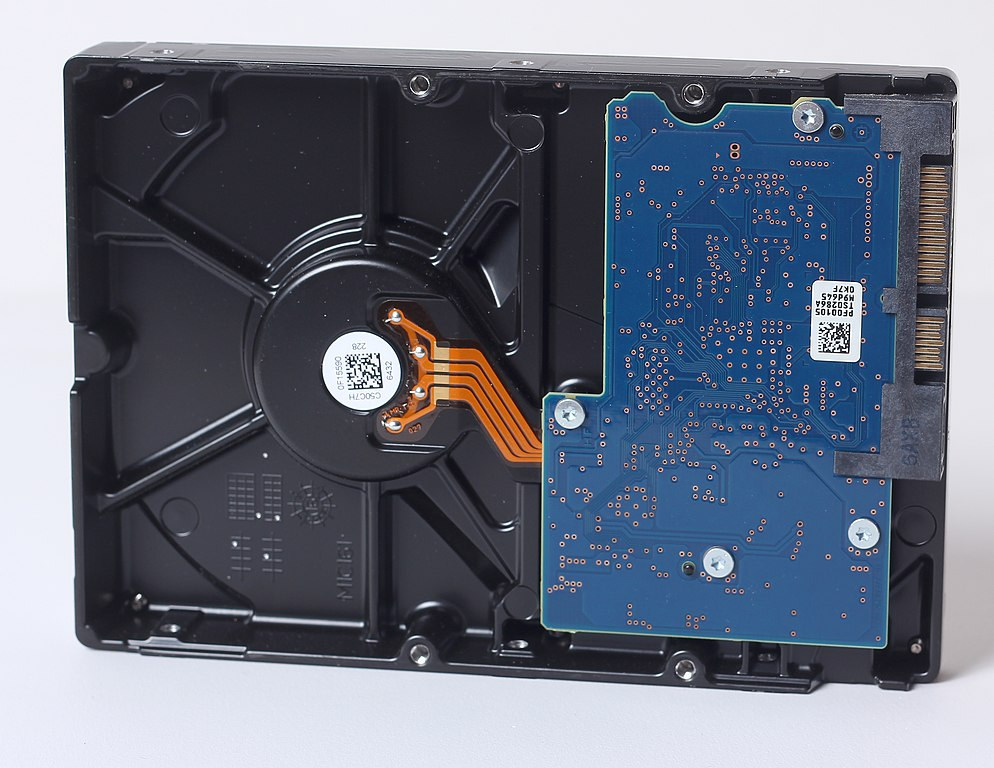
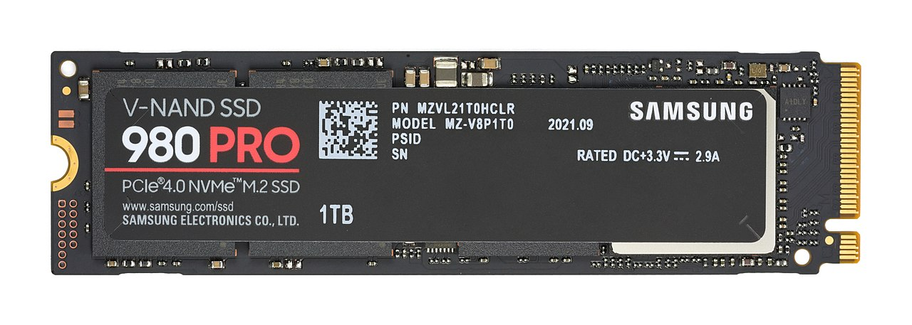
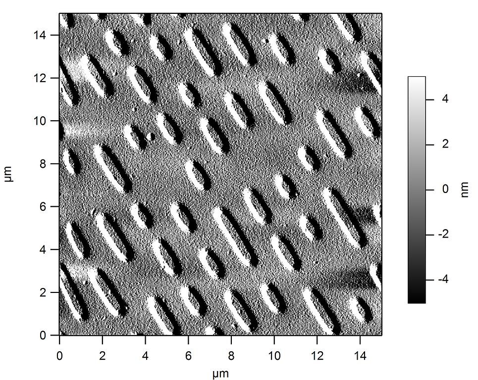
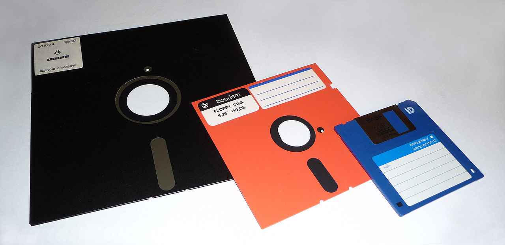
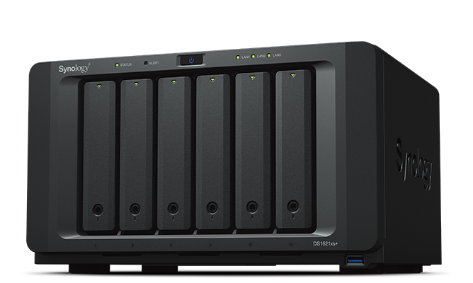

Information storage¶
Computers are devices that process and transform information, so the devices that store this information are essential to determine the capacity and speed of the computer.
Index of contents:
Classification of storage devices¶
Depending on your position and connection to the local computer:
Primary storage
- RAM
- Cache
- Data buffer
Secondary storage
- ROM memory
- SSD solid state drive
- HDD Magnetic Hard Drive
External storage
- CD-ROM, DVD, Blu-ray optical drives
- Pen drive
- SD cards
- Magnetic tape
- Floppy disks
Virtual storage
- NAS equipment
- Cloud storage
Depending on your storage method:
Solid state devices
- RAM
- ROM memory
- SSD Solid State Drive
- Usb sticks
- SD cards
Magnetic storage devices
- HDD hard drives
- Magnetic tape
- Floppy disks
Optical storage devices
- CD-ROM discs
- DVD discs
- Blu-ray discs
Primary storage¶
Primary storage memories are the devices that contain the information with which the processor is working. They are the fastest memories and closest to the central processing unit.
- RAM
The RAM memory or random access memory is temporary storage memory for programs and data handled by the CPU.
RAM must be very fast so as not to slow down the speed of the central processing unit (CPU). A current RAM memory can transfer more than 20 gigabytes per second.
It must also be large enough to contain all the programs, apps, and data that are running simultaneously on the computer. In 2022, an average smartphone typically has 4-8 gigabytes of RAM and a personal computer 8-16 gigabytes of RAM.
The disadvantage of RAM memory is that it loses its data when the power to the computer is turned off. In addition, it is usually much more expensive than secondary storage memories, €5/gigabyte for RAM memory compared to €0.02/gigabyte for a hard drive in 2022.
- Cache
The cache memory is a type of fast memory that temporarily stores the contents read from RAM memory so that subsequent read requests can be handled more quickly.
It works in a similar way to RAM, but it is smaller and faster to access. It arose when the RAM memory was no longer able to work at the same speed as the processor and is used by the processor to reduce the access time to the data and programs located in the RAM memory that are used most frequently.
Today the RAM cache is usually integrated within the processor itself and is usually several megabytes in size.
Secondary storage¶
The secondary storage devices of a computer are non-volatile memories, that is, they store data despite the fact that the computer is not powered. They are usually installed permanently inside the computer to store the operating system and the different programs and data that are commonly used.
Secondary storage devices are slower than primary storage devices. As a counterpart, they have greater storage capacity.
- ROM memory
The ROM memory (Read Only Memory) or read-only memory is a permanent storage memory for computer programs and data. This memory stores the so-called Firmware, read-only programs that manage a device.
Many ROMs in use today are not really read-only. They are usually based on Flash technology and can be rewritten multiple times. For this reason, today this memory is also called Flash memory.
Flash memory is usually slower, simpler, and smaller in capacity than the memory included in SSD drives, even though both are internally based on similar technology.
Examples of ROM memory are the BIOS (Basic Input Output System) memory of a personal computer, or the internal program of devices such as a router, remote control, etc.
Phoenix BIOS ROM memory of a personal computer motherboard.¶
Raimond Spekking, CC BY-SA 4.0, via Wikimedia Commons.- Hard Disk Drive (HDD)
The hard disk drive is a type of secondary memory based on a rotating disk impregnated with a magnetic substance that allows information to be stored permanently.
Hard drives are responsible for storing programs and data so that they are maintained while the computer is turned off.
When a computer user wants to run a program or view a data file, the information is read from the hard drive and written to RAM so that the CPU can work with it.
Hard drives have been on the market for many years (since 1956) so they are based on established and highly optimized technologies. Despite this, they are gradually being replaced by SSDs due to the many advantages that the latter present.
Hard Disk Drive (HDD) with SATA connection, seen from below.¶
Dmitry Makeev, CC BY-SA 4.0, via Wikimedia Commons.- Solid State Drive (SSD)
The solid state drive is a type of secondary memory based on Flash technology chips that permanently store information.
They are newer on the market (since 1989) than hard drives and have less capacity for the same price, but they are rapidly improving over the years and are gradually replacing traditional hard drives.
Solid State Storage Drive (SSD) with PCI Express connection.¶
D-Kuru, CC BY-SA 4.0, via Wikimedia Commons.- Comparison between HDD and SSD
- Advantages of SSDs:
- Higher transfer speed. Over 600 megabytes/s for an SSD vs. 100 megabytes/s for an HDD.
- Less access time. 0.1 milliseconds for an SSD vs. 10 milliseconds for an HDD.
- Greater resistance to shocks and vibrations.
- Lower SSD failure rate as there are no moving parts.
- Lower electrical consumption. 4W or 5W from an SSD at maximum performance vs. 6W to 10W from an HDD.
- Smaller physical size.
- Less noise generated.
- Disadvantages of SSDs:
- Lower resistance to a large number of writes.
- Higher price per gigabyte. 140€/TB for an SSD compared to 24€/TB for an HDD in 2022.
- SMART
SMART is a technology implemented by hard drives and solid state drives. It is an early failure detection system that allows you to know in advance if a hard drive shows signs of failing soon.
SMART technology monitors drive parameters such as drive temperature, bad sectors, amount of data written, read errors, operating time, number of boots, etc. Although it is not capable of detecting all possible failures, it does allow warning of most failures due to unit degradation.
There are several programs that allow you to read the SMART parameters of a storage unit. Some monitoring programs are:
- RAID
A RAID (Redundant Array of Independent Disks) system is a technology that allows you to join several hard disk drives (HDD) or solid state drives (SSD) in order to increase their benefits. It is used in data servers and high performance computers. A specialized RAID controller is needed to connect the drives to the computer.
In a RAID level 1, the operating system sees a single drive where there are actually multiple hard drives. The total transfer speed increases by joining the transfer speeds of each of the disks.
In later RAID levels, one disk is used to store parity-redundant data. This allows data not to be lost due to the failure of one of the drives. Upon detecting a damaged drive, the drive can be replaced with a new one, and the system will automatically recover the lost data from the redundant data.
- Data buffer
A data buffer is a temporary memory space that stores read or write data that is directed to a peripheral. This speeds up processor performance and prevents a device from losing data during irregular data transfer.
Write buffers for a device slower than the processor, such as a hard drive or flash drive, store several megabytes of data that are sent in quick bursts by the processor, only to be written to the storage device at a slower speed later on. continuously.
Input devices, such as keyboards or mice, also have a read buffer that stores the data sent by the peripherals until it is quickly read by the processor. In this way the main processor does not have to be constantly serving a slow device, but instead serves it in fast bursts without waiting.
Data buffers are often found inside I/O peripherals and storage media.
External storage¶
External storage devices can be easily disconnected from the computer for transport.
Their speed is usually slower than previous internal storage methods, but they have the advantage of being more mobile and easy to transport.
- Pen drive
The USB memory is an external memory based on flash technology with connection to the USB type computer.
Its maximum capacity increases with age due to Moore's law. In 2022 you can buy a 512 gigabyte USB memory for a price of about 40 Euros.
The read speed is usually slower than a hard drive and the write speed is usually much slower on most devices.
- SD card
Memory on SD card is based on the same technology as USB flash drives and has similar performance.
The SD card connection standard is simpler than the USB standard. In addition, the physical size of SD cards is usually smaller than that of flash drives, especially microSD cards.
- Optical storage devices
The CD-ROM, the DVD and the Blu- ray are optical data storage drives.
All of them are based on a sheet of silver metallic material that reflects a fine beam of laser light or does not reflect it depending on the marks that are engraved in a spiral groove along the disc.
The fundamental difference between the different technologies is the increasing storage capacity and higher transfer speeds of the most modern devices.
Micrograph of the surface of a CD-ROM showing the grooves with the markings.¶
Freiermensch, CC BY-SA 3.0, via Wikimedia Commons.The typical characteristics of the different optical storage devices are the following:
Parameter CD ROM DVD Blu-ray Storage capacity 0.750 gigabytes 4.7 gigabytes
8.0 gigabytes double layer
25 gigabytes
50 gigabytes double layer
Transfer speed 0.15 megabyte/s (1x)
2.8-7.2 megabytes/s (48x)
1.4 megabyte/s (1x)
33 megabytes/s (24x)
4.5 megabytes/s (1x)
54 megabytes/s (12x)
Read/write laser Infrared (780nm) Red (650nm) Violet (405nm) Read/Write Drive Cost €18 €18 €100 Disk cost €0.40 €0.90 €0.90 Cost per gigabyte €0.53/GB €0.19/GB €0.036/GB Release year 1985 nineteen ninety six 2005 Disc diameter 12cm 12cm 12cm At the time they were released, these optical storage drives had more capacity than hard drives themselves, making it a very cheap storage method for backups. Today, the capacity of hard drives has grown so much that their storage cost has dropped a lot, to €0.023/GB, so these optical drives are no longer profitable to store large amounts of data.
USB flash drives have also grown exponentially in their capacity and in 2022 a drive with a higher capacity than a Blu-ray is relatively cheap (€5). Although the price per gigabyte is still somewhat higher for USB flash drives (0.12 - 0.05€/gigabyte) than for a Blu-ray, their greater versatility and ease of reading/writing have made them take over many applications that were previously performed with optical discs, such as music players.
Years ago it was common for programs to be sold recorded on optical discs. Today, thanks to fiber optic networks, downloading programs over the Internet and virtual storage disks have become popular as a means of data transmission between individuals.
For all these reasons the use of optical discs has gradually declined and today there are very few applications in which they have any advantage.
- Magnetic tape
The magnetic tape is a storage support based on a plastic tape impregnated on its surface with magnetic material and rolled into a cartridge. It has been one of the first means of mass data storage since the origin of computing.
It has some disadvantages, such as its sequential access to information and therefore its slowness. Its biggest advantage is its low price per gigabyte, being able to store the same information as a hard drive for less.
Today its use is limited to making backup copies of large amounts of data. The best-known technology is LTO (Linear Tape Open), which in its LTO-9 version is capable of storing up to 18 terabytes of data on a single cartridge.
- Floppy disks
The floppy disk or floppy disk is a technology based on a flexible plastic disk impregnated on its surface with a ferromagnetic material that stores information and encapsulated in a casing paper or plastic.
Diskettes, or floppies, came to dominate external storage for about 30 years, mostly in the 1980s and 1990s, but are now obsolete technology.
Its past influence can be seen today in the icons of recording data to disk, which are often represented by a 3 1/2-inch floppy disk.
Flexible disks (floppy disks) of different sizes.¶
George Chernilevsky, Public Domain, via Wikimedia Commons.

{kind=link}
{kind=link}
{kind=link}
{kind=link}
{kind=link}
{kind=link}
{kind=link}
{kind=link}
{kind=link}
{kind=link}
Network storage¶
Network storage devices are specialized data storage devices that are accessed through a local Ethernet network or through the Internet, giving the impression that you are working with a local storage unit.
Network storage allows information and storage resources to be optimized and shared among multiple computers.
- NAS server
The NAS (Network Attached Storage) server is a computer dedicated to storing data on its disk or solid-state drives and sending or receiving this data through from the local network. It allows to store, recover and share the data in a centralized point for all the computers of a local network.
Normally NAS servers are equipment designed to attend exclusively to this function. They contain several bays to add storage units (HDD or SSD) in RAID connection to increase their performance.
6-bay Synology DiskStation NAS (Network Attached Storage).¶
Radha 1100, CC BY-SA 4.0, via Wikimedia Commons.- Cloud storage
The cloud is the commercial name given to data centers, made up of a multitude of computers that can act as data servers. data or as online application servers.
These data centers belong to large companies such as Amazon (Amazon Web Services), Microsoft (Azure), Google (Google Cloud Platform) or other smaller companies.
The cloud can be used by individual users, for example, when we store our data in Google Drive, or it can be used by large companies like Netflix, which stores its series and movies on Amazon (AWS) servers to serve them by streaming.
- Vídeo: Inside a Google data center.
{kind=link}